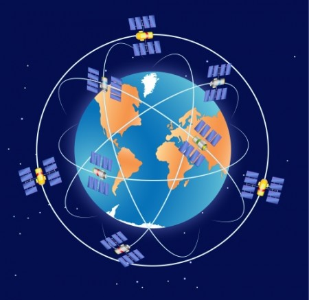

Sumário
Teoria da Relatividade
A teoria da relatividade surgiu no século XX e foi uma grande
revolução, pois ela transformava conceitos básicos e explicava coisas que até então
não haviam sido explicadas. Essa teoria foi desenvolvida pelo físico Albert
Einstein. A teoria da relatividade é dividida em outras duas teorias, são elas:
Teoria da Relatividade Restrita (que estuda fenômenos relacionados a referenciais inertes)
e Teoria da Relatividade Geral (que estuda fenômenos do pontos de vista não inerte).
Apesar das duas formarem uma só teoria (da relatividade) elas foram propostas em
tempos diferentes e mostram conhecimentos úteis que indicam os movimentos não sendo
absolutos, mas sim relativos.
Falando da Teoria da Relatividade Restrita, ela possui dois postulados importantes.
- 1º Postulado: as leis da Física são as mesmas em todos os sistemas de referência inercial.
- 2º Postulado: a velocidade da luz no vácuo tem o mesmo valor para qualquer referencial inercial, ou seja, c = 300.000 km/s.
Exemplos no Dia a Dia da Teoria da Relatividade
Quando falamos em Relatividade você não imagina que ela esteja no nosso cotidiano, mas ela está bem
presente, quando falamos na velocidade da luz. Um ótimo exemplo disso é o GPS, uma
tecnologia presente na vida de muita gente, ele só é possível de funcionar devido a
Teoria da Relatividade. O GPS utiliza 24 satélites que orbitam
a Terra e transmitem informações ao usuário, e tudo isso somente capaz
devido a teoria de Einstein. A teoria é necessária para os cálculos de compensação para
ajustar a velocidade do satélite e calcular corretamente a posição do objeto. Além deste,
mísseis utilizam a teoria da relatividade para calcular seus alvos.

GPS utilizando dos satélites que orbitam a Terra - Link da imagem
RESUMÃO
Chegou a hora de fazer o Resumão! Para isso, aqui vão algumas dicas para você fazer o seu de forma completa e saber tudo sobre a Teoria da Relatividade:
- Tente se lembrar de fatos e detalhes importantes, você não precisa saber exatamente o que as teorias são, apenas como funcionam e o que mudaram na física.
- As teorias aconteceram no século XX, então são recentes, e foram feitas por Albert Einstein, um físico bem conhecido.
- Uma das maneiras de se lembrar desses tópicos são os resumos, como por exemplo, frases com palavras chave grifadas, mas você sempre pode fazer o jeito que lhe ajuda mais.
Refêrencias
Vídeo Youtube - Teorias da Relatividade
SóFísica - Teoria da Relatividade
Brasil Escola - Teoria da Relatividade
Info Escola - Física Moderna
Info Escola - GPS